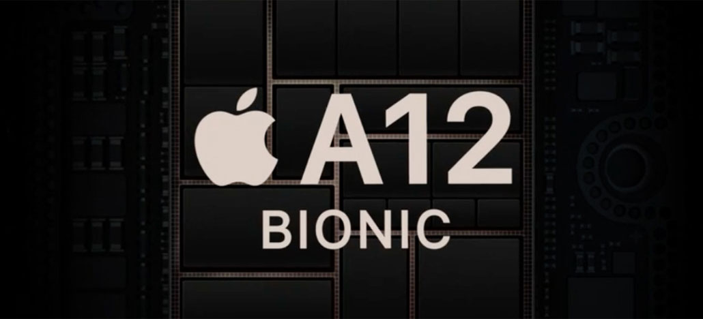

A11 Bionic APL1W72의 후속작으로 아이폰 XS | XS Max 그리고 아이폰 XR과 함께 공개되었다. CPU는 Apple Vortex을 듀얼코어 구성으로 빅 클러스터를 이루고, Apple Tempest를 쿼드코어 구성으로 리틀 클러스터로 이뤄서 ARM big.LITTLE 솔루션을 적용한 HMP 모드 지원 헥사코어 CPU를 탑재했다. 전작인 A11 Bionic APL1W72와 비교할 때 빅 클러스터 기준 약 15%의 성능 향상과 약 40%의 전력 소모율 향상이 있으며 리틀 클러스터 기준 약 50%의 전력 소모율 향상이 있다고 한다. GPU는 Apple G11P[33]를 쿼드코어 구성으로 탑재했다. 전작인 A11 Bionic APL1W72와 비교할 때 약 50%의 성능 향상이 있다고 한다. 인공신경망 프로세서인 NPU를 탑재했다. 이로 인해 생체인식 솔루션과 연계해 사용하거나 AI 성능을 별도로 처리한다. 그런데, 파트넘버는 동일하지만 탑재된 기기에 따라 구성이 다르다. 우선 아이폰 XS | XS Max 그리고 아이폰 XR에는 Apple Next-Generation Neural engine을 옥타코어 구성으로 탑재했으며 최대 5 TOPS의 성능을 가진다.[34] 다만, A9 APL0898 & APL1022부터 모바일 AP에 내장[35]되었던 모션 인식 프로세서는 탑재되지 않았다. 3세대 아이패드 에어와 5세대 아이패드 미니에는 Apple Neural engine을 탑재한 것으로 보이며[36] 센서 허브의 역할을 수행하는 Apple M12 모션 인식 프로세서를 탑재했다. 메모리 컨트롤러도 탑재해서 LPDDR4X SDRAM, NVMe 규격을 지원한다. 이외에도 위상차 검출 AF를 지원하는 ISP를 탑재했다. 여기에 촬영 및 재생 등을 위한 여러 가지 코덱 및 컨트롤러 등을 탑재한 것으로 보인다. 생산 공정은 TSMC의 7nm FinFET (ArFi) 공정으로 세계 최초로 7nm 공정에서 생산된 모바일 AP[37]이다. 벤치마크 결과의 경우, 해당 모바일 AP를 기반으로 한 개발 보드는 존재하지 않은 상황이다. 실제 탑재된 기기인 아이폰 X을 기준으로 할 때 CPU 성능은 Primate Labs의 Geekbench 4 기준, 싱글코어 점수가 약 4,800 점으로 측정되었고 멀티코어 점수가 약 11,000 점으로 측정되었다. GPU 성능은 Apple Metal API로 측정되는 Primate Labs의 Compute Bench 기준, 약 21,000 점으로 측정되었다. 실제 기기의 CPU 동작 과정을 분석한 결과, 삼성전자의 Turbo Mode와 유사한 조치가 취해진 것이 확인되었다. 리틀 클러스터가 전부 작동할 때의 CPU 클럭은 1.53 GHz이고 싱글코어 구성으로 작동할 때의 CPU 클럭은 1.59 GHz이다. 전체적으로 A9 APL0898 & APL1022부터 A11 Bionic APL1W72까지 가파르게 올라가던 성능 향상보다는 전력 소모율의 개선과 머신러닝의 강화로 방향성을 치중한 것 같다는 평가가 나오고 있다. CPU 성능은 전작인 A11 Bionic APL1W72과 비교해서 점수는 미미하게 상승하였다. 다만, 모바일 AP의 성능뿐만이 아니라 기기의 전체적인 요소들을 고려해 측정하는 Antutu의 경우, 아이폰 XS 기준으로 약 36만 점을 기록했다고 한다. 일단 L1 Cache의 용량이 늘어나고 NPU가 아이폰 XS | XS Max 그리고 아이폰 XR 기준으로 전작인 A11 Bionic APL1W72는 600 GOPS의 성능을 가졌지만 이번에는 8배 가량 높아진 5 TOPS의 성능을 가진 것을 보면 성능 향상은 이루어진 것이 맞지만 전통적인 벤치마크에서는 그동안 새로운 시리즈마다 보여주던 성능향상폭과는 다르게 점수의 상승치가 크지 않은 편이다. 그간 삼성전자의 엑시노스 시리즈 및 퀄컴의 스냅드래곤 시리즈 소속 모바일 AP들이 해왔던 것처럼 배터리 타임을 개선하기 위해 모바일 AP의 전력 소모율을 개선하는 것이 사용자 입장에서 더욱 좋은 현상이라는 해석도 있다. 여기에 2017년 들어서 AI를 기반으로한 여러 소프트웨어들이 주요 콘텐츠로 사용되고 있는 스마트폰 시장의 특성을 고려하면 NPU는 애플이 가지고 있는 중요하고도 좋은 요소 중 하나[38]이기 때문에 전통적인 성능을 측정하는 부분에서 정체되었다고 해서 크게 문제되지 않을 것이라는 의견도 있다.